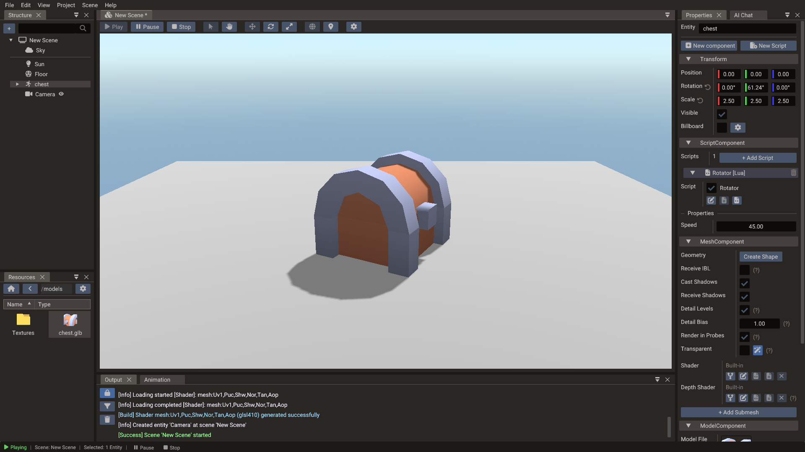
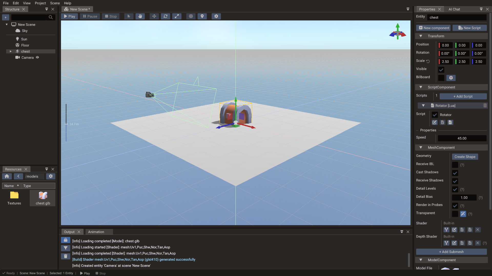

First 3D Scene¶
This tutorial creates a complete small 3D scene and introduces the essential pieces of a Quantum 3D level: scene setup, camera, directional light, a 3D model, PBR materials, and optional collision.

What you will build¶
By the end of this tutorial you will have:
- A 3D scene with a model visible in the game camera
- Directional lighting with optional shadows
- A physics floor and optional collision on the model
- A script that rotates the object each frame
1. Create the project and scene¶
- Open the editor and choose File → New Project to start with a fresh temporary project and its initial 3D scene.
- Choose File → Save All. The editor asks where the new scene goes — name it
main— and then where the project itself lives: enter a project name and select an empty directory.
2. Set up the camera¶
A new 3D scene has no camera entity; it renders through a built-in camera until you add one. In the Structure panel, choose + → Create entity → Camera. The first camera you add becomes the scene's main camera. Then:
- Keep Type on Perspective.
- Position it at approximately
(0, 3, 8). To keep it facing the origin, enable Use Target and set Target to(0, 0, 0). - Set Near to
0.1and Far to200for a typical scene scale.
Click View on the Preview row of the CameraComponent to look through the camera, and Exit to return to the editor view. Press F with the camera selected to frame it in the editor view.
3. Adjust the directional light¶
A new 3D scene already has a Sun: a directional light with shadows enabled. Other lights come from + → Create entity → Light → Directional, Point, or Spot.
- Select Sun.
- Change its Direction so shadows fall at a diagonal; it starts at
(-0.2, -0.5, 0.3). - Set Intensity to
2.0and choose a warm white Color (1.0, 0.95, 0.8). - Keep Shadows → Enabled on so the model casts a shadow onto the floor.
The scene's Global Illumination (select nothing to see the scene settings) starts
at an intensity of 0.2, which keeps shadowed areas from going completely black.
4. Import and place a model¶
- Copy a GLTF file into your project's
assets/folder (or drag one from your OS file manager into the Resources Browser). - In the Resources Browser, drag the GLTF file into the scene view — a Model entity is created automatically.
- Use the Translate gizmo (W) to move the model to the origin.
- If the model appears very large or very small, adjust its Scale in the Properties window. GLTF files exported from Blender with default settings use meters — scale down if your scene uses smaller units.
5. Tune the materials¶
If the model carries its own GLTF materials, they appear automatically. To adjust them:
- Select the model — or, for a model with several meshes, one of its child mesh entities in the Structure panel.
- In the Properties window, expand the Submesh material section.
- Adjust Roughness (lower = shinier), Metallic (0 = plastic, 1 = metal), and check that the Base Texture path is correct.
To reuse the same material on several objects later, drag the material preview from
Properties into the Resources Browser to create a .material file, then drag that file
onto other meshes. See Material files.
Tips:
- Roughness controls how wide the specular highlight is — 0.1 looks mirror-smooth, 0.9 looks matte.
- Metallic should only be 1.0 for actual metals; leave it at 0.0 for wood, stone, fabric, and plastic.
- Preview under both bright and dim lighting to catch texture issues early.
6. Add a script — rotating object¶
- Select the model and click New Script at the top of the Properties window.
- Choose Lua Script, enter
Rotatoras the module name, and click Create. The editor adds aScriptComponentto the model and links the new script to it. -
Open the file with the source button on the script entry and replace its contents with:
local Rotator = { properties = { { name = "speed", displayName = "Speed", type = "float", default = 45.0 } } } function Rotator:init() RegisterEngineEvent(self, "onUpdate") self.angle = 0 end function Rotator:onUpdate() local obj = Object(self.scene, self.entity) self.angle = self.angle + self.speed * Engine.deltatime -- Quaternion(x, y, z) builds a rotation from Euler angles in ZYX order -- (in degrees, since Engine.useDegrees is true by default). obj.rotation = Quaternion(0, self.angle, 0) end return Rotator -
Save the file (Ctrl+S). The Speed property appears on the script entry.

7. Add a floor with collision¶
- Choose + → Create entity → Basic shape → Plane for the floor.
- Position it at
(0, -0.5, 0)and scale it wide. - Click New component and choose 3D Physics Body.
- Choose Box in the shape list and click Add Shape, then set the shape's Width, Height, and Depth to match the floor.
- Keep Body Type on Static.
Optionally give the model a 3D Physics Body with a Convex Hull or Box shape and set it to Dynamic to see it react to gravity.
8. Run the scene¶
Press Play. The model should rotate and be illuminated by the directional light.
If the scene appears completely black:
- The light is enabled and has positive intensity.
- The scene's Light State is
ONorAUTO. - The model has materials with valid albedo textures or colors.
- The camera's Far plane is greater than the distance to the model.
- The camera is the active camera in the scene's Camera field.
Press Stop when done.
9. Next steps¶
- Add skeletal animation using the Animation Timeline.
- Add a Sky entity, enable Receive IBL on reflective meshes, and optionally hide the sky with Visible while keeping reflections: see Rendering Pipeline — IBL.
- Add fog for depth: see Rendering Pipeline.
- Add a UI overlay HUD: see First UI Scene.
- Continue with 3D Graphics and Physics.